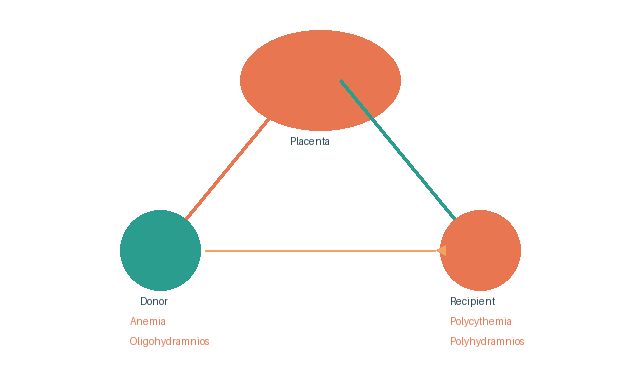

Twin-to-Twin Transfusion Syndrome (TTTS)
Occurs in 10%–15% of monochorionic twins.
Due to arterio-venous anastomosis with imbalanced blood flow. Blood flows in a fixed direction from 1 fetus (donor) to another (recipient).
Donor Twin
Recipient Twin
Management
Student Activity
The students' groups are requested to prepare illustrative diagrams of various developmental forms of twin pregnancy.
Questions: https://forms.gle/dsQLn79xRafpURMV9
